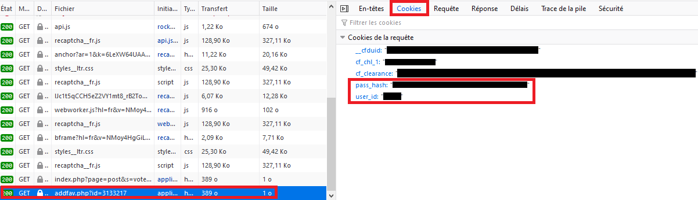

Welcome on BooruSharp 2.7.0 documentation.
BooruSharp is a C# library allowing you to get images from Booru websites. BooruSharp currently handle the following websites:- booru.allthefallen.moe
- danbooru.donmai.us
- e621.net
- e926.net
- furry.booru.org
- gelbooru.com
- konachan.com
- lolibooru.moe
- realbooru.com
- rule34.xxx
- safebooru.org
- sakugabooru.com
- beta.sankakucomplex.com
- xbooru.com
- yande.re
The project is available on GitHub at https://github.com/Xwilarg/BooruSharp
And on NuGet at https://www.nuget.org/packages/BooruSharp/
If you need additional help you can come ask your questions on Discord or open an issue on GitHub
This documentation is for the version 2.7.0. For the version 1.4.8, please refer to the old one: https://github.com/Xwilarg/BooruSharp/wiki
Migrating from 1.4.8 to 2.0.0
See the transition guide.Quick Start
To begin with you must instantiate a new Booru, they are in the namespace BooruSharp.Booruvar booru = new BooruSharp.Booru.Gelbooru();Then you can use all the different functions from it:
var result = booru.GetRandomImageAsync("kantai_collection");
Console.WriteLine(result.fileUrl);
You can scroll bellow to see the different functions available.Feature list
| Booru | Multiple Random Images | Post by ID | Post by MD5 | Tag by ID | Comment API | Last Comments API | Wiki API | Related Tag API | Post Count API | Favorite API |
|---|---|---|---|---|---|---|---|---|---|---|
| Atfbooru | ✔️ | ✔️ | ✔️ | ✔️ | ✔️ | ❌ | ✔️ | ✔️ | ❌ | ❌ |
| Danbooru Donmai | ✔️ | ✔️ | ✔️ | ✔️ | ✔️ | ❌ | ✔️ | ✔️ | ❌ | ❌ |
| E621 | ✔️ | ❌ | ✔️ | ❌ | ❌ | ❌ | ❌ | ❌ | ❌ | ❌ |
| E926 | ✔️ | ❌ | ✔️ | ❌ | ❌ | ❌ | ❌ | ❌ | ❌ | ❌ |
| Furry Booru | ❌ | ✔️ | ❌ | ✔️ | ✔️ | ✔️ | ❌ | ❌ | ✔️ | ✔️ |
| Gelbooru | ✔️ | ✔️ | ❌ | ✔️ | ✔️ | ✔️ | ❌ | ❌ | ✔️ | ✔️ |
| Konachan | ✔️ | ❌ | ❌ | ✔️ | ✔️ | ✔️ | ✔️ | ✔️ | ✔️ | ❌ |
| Lolibooru | ✔️ | ❌ | ❌ | ✔️ | ✔️ | ✔️ | ✔️ | ✔️ | ✔️ | ❌ |
| Realbooru | ❌ | ✔️ | ❌ | ✔️ | ✔️ | ✔️ | ❌ | ❌ | ✔️ | ✔️ |
| Rule 34 | ❌ | ✔️ | ❌ | ✔️ | ❌ | ❌ | ❌ | ❌ | ✔️ | ✔️ |
| Safebooru | ❌ | ✔️ | ❌ | ✔️ | ❌ | ❌ | ❌ | ❌ | ✔️ | ✔️ |
| Sakugabooru | ✔️ | ❌ | ❌ | ✔️ | ✔️ | ❌ | ✔️ | ✔️ | ✔️ | ❌ |
| Sankaku Complex | ✔️ | ❌ | ❌ | ✔️ | ✔️ | ✔️ | ✔️ | ❌ | ❌ | ❌ |
| Xbooru | ❌ | ✔️ | ❌ | ✔️ | ✔️ | ✔️ | ❌ | ❌ | ✔️ | ✔️ |
| Yandere | ✔️ | ❌ | ❌ | ✔️ | ✔️ | ❌ | ✔️ | ✔️ | ✔️ | ❌ |
Instantiate boorus
There are several boorus you can use, here are the ways the instantiate them:new Atfbooru(); new DanbooruDonmai(); new E621(); new E926(); new Furrybooru(); new Gelbooru(); new Konachan(); new Lolibooru(); new Realbooru(); new Rule34(); new Safebooru(); new Sakugabooru(); new SankakuComplex(); new Xbooru(); new Yandere();
Authentification
You might need authentification for some services (like the favorites)To do that, you need to create a new BooruAuth:
new BooruAuth(string userId, string passwordHash);
Then to pass it to your booru using SetBooruAuth:
booru.SetBooruAuth(BooruAuth auth);
Getting your user ID and your password hash can be fairly annoying, I would advice you to go on any image of the booru you want this information, to open the developer pannel (F12) and go in the "Network" tab.
Then press the button to add the image to your favorite and look at the last request in the "Cookies" section.

Create your own booru
To create your own booru, you need to inherit one of the class in BooruSharp.Booru.Template.Each booru take in parameters the base URL of the website and some BooruOptions (optional).
The templates are:
- Danbooru: Based on Danbooru Donmai
- E621: Based on E621
- Gelbooru: Based on Gelbooru
- Gelbooru02: Based on Gelbooru 0.2
- Moebooru: Based on Moebooru
- Sankaku: Based on Sankaku Channel
public sealed class Safebooru() : base("safebooru.org", BooruOptions.noComment)
Please notice that we didn't put the "https://" at the beginning of the url and that it also doesn't end with a "/".BooruOptions are settings to precise the behaviour of your booru.
Templates probably already gives most of the options you need so you don't have to think too much about them.
- useHttp: Use HTTP instead of HTTPS to do requests
- noWiki: Wiki not available for this booru
- noRelated: Related tags not available for this booru
- noComment: Comments not available for this booru
- noTagById: Tags can't be searched by ID for this booru
- noPostByMd5: Posts can't be searched by their MD5
- noLastComments: Can't get list of all lasts comments for this booru
- commentApiXml: Comment API can't be contacted using JSON
- tagApiXml: Tag API can't be contacted using JSON
- limitOf20000: Only for Gelbooru and Gelbooru02 template, limit of 20 000 posts per requests
protected internal virtual Search.Comment.SearchResult GetCommentSearchResult(object json); protected internal virtual Search.Post.SearchResult GetPostSearchResult(JToken obj); protected internal virtual Search.Post.SearchResult[] GetPostsSearchResult(object json); protected internal virtual JToken ParseFirstPostSearchResult(object json); protected internal virtual Search.Related.SearchResult GetRelatedSearchResult(object json); protected internal virtual Search.Tag.SearchResult GetTagSearchResult(object json); protected internal virtual Search.Wiki.SearchResult GetWikiSearchResult(object json);Feel free to check how it's done in the template classes to understand how to do it.
Exception thrown
- Search.FeatureUnavailable: This function is not available for this booru (see above)
- Search.InvalidTags: There is no image with the tags you provided
- Search.AuthentificationInvalid: The credentials you provided are invalid
- Search.InvalidPostId: There is no post with this ID (only for favorites)
- Search.TooManyTags: You can't provide more than 2 tags for this booru
- Search.AuthentificationRequired: You must authentificate before using this feature. See the authentification section
General functions
HttpClient is what is used by BooruSharp for the API requests, if you don't use this property, a new one will automatically be createdpublic HttpClient HttpClient { set; private get; }BooruAuth allow to authentificate to a booru, see https://boorusharp.zirk.eu/#authentification
public BooruAuth Auth { set; get; }HasRelatedAPI returns if the booru has a "tag related" API
bool HasRelatedAPI();
HasWikiAPI returns if the booru has a "wiki" API
bool HasWikiAPI();
HasCommentAPI returns if the booru has a "comment" API
bool HasCommentAPI();
HasTagByIdAPI returns if the booru has a can search tags by ID
bool HasTagByIdAPI();
HasSearchLastComment returns if the booru can search for all last comments
bool HasSearchLastComment();
HasPostByMd5API returns if the booru can search post using this MD5
bool HasPostByMd5API();
HasPostByMd5API returns if the booru can search post using this MD5
bool HasPostById();
HasPostCountAPI returns if the booru can return the total number of images it has given some tags
bool HasPostCountAPI();
HasMultipleRandomAPI returns if can search multiple random images at once
bool HasMultipleRandomAPI();
HasFavoriteAPI returns if the booru can add/remove favorite
bool HasFavoriteAPI();
CheckAvailabilityAsync check if the booru is avaiable, throw a HttpRequestException if not
async Task CheckAvailabilityAsync();
Post functions
GetImageByMd5Async returns a post given it MD5 hashasync Task<Search.Post.SearchResult> GetImageByMd5Async(string md5);
GetImageByIdAsync returns a post given it ID hash
async Task<Search.Post.SearchResult> GetImageByIdAsync(int id);
GetRandomImageAsync returns a random post. Tags can be given in parameters
async Task<Search.Post.SearchResult> GetRandomImageAsync(params string[] tagsArg);
GetLastImagesAsync all the post on the first page. Tags can be given in parameters
async Task<Search.Post.SearchResult[]> GetLastImagesAsync(params string[] tagsArg);
Search.Post.SearchResult is defined by the following struct
Url of the imageUri fileUrl
Preview url of the image
Uri previewUrl
The url of the post
Uri postUrl
Is the image safe or not
Rating rating
enum Rating
{
Safe,
Questionable,
Explicit
}All the tags contained in the image
string[] tags
Id of the image
int id
Size in octets of the image
int? size
Height in pixels of the image
int height
Width in pixels of the image
int width
Height in pixels of the preview image
int? previewHeight
Width in pixels of the preview image
int previewWidth
Wehn the post was created
DateTime? creation
Where the image is coming from
string source
Score of the image
int score
Hash (md5) of the image
string md5
Comment functions
GetCommentsAsync return the comment of a post given it idasync Task<Search.Comment.SearchResult> GetCommentsAsync(int postId);
GetLastsCommentsAsync return the lasts comments posted on the website
async Task<Search.Comment.SearchResult> GetLastsCommentsAsync();
Search.Comment.SearchResult is defined by the following struct
Id of the commentint commentId
Id of the image associated with the comment
int postId
Id of the author of the comment, is null if the author is anonymous
int? authorId
When the comment was posted
DateTime creation
Name of the author of the comment
string authorName
Comment's message
string body
Tag functions
GetTagAsync return a tag given it nameasync Task<Search.Tag.SearchResult> GetTagAsync(string name);
GetTagAsync return a tag given it id
async Task<Search.Tag.SearchResult> GetTagAsync(int id);
GetTagsAsync return the similar tags of the one given in parameter
async Task<Search.Tag.SearchResult[]> GetTagsAsync(string name);
Search.Tag.SearchResult is defined by the following struct
Id of the tagint id
Name of the tag
string name
Type of the tag (character, copyright, etc...)
TagType tag
enum TagType
{
Trivia,
Artist,
Copyright = 3,
Character,
Metadata
}Number of occurences of the tag
int count
Related functions
GetRelatedAsync return the tags related to the one given in parameterasync Task<Search.Related.SearchResult[]> GetRelatedAsync(string tag);
Search.Related.SearchResult is defined by the following struct
Name of the tagstring name
Number of occurences of the tag
int? count
Wiki functions
GetWikiAsync return a wiki pageasync Task<Search.Wiki.SearchResult> GetWikiAsync(string query);
Search.Wiki.SearchResult is defined by the following struct
Id of the wiki entryint id
Name of the tag described
string title
Date when the entry was created
DateTime creation
Date of the latest update to the entry
DateTime lastUpdate
Tag description
string body
Favorite functions
You must be authentificated to use favorite functions (see authentification)AddFavoriteAsync add a comment to favorite given some tags
async Task AddFavoriteAsync(int postId);
RemoveFavoriteAsync add a comment to favorite given some tags
async Task RemoveFavoriteAsync(int postId);